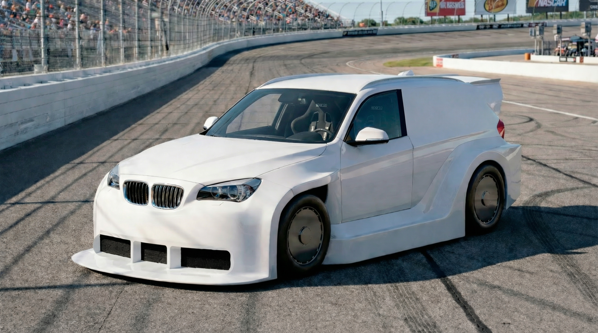
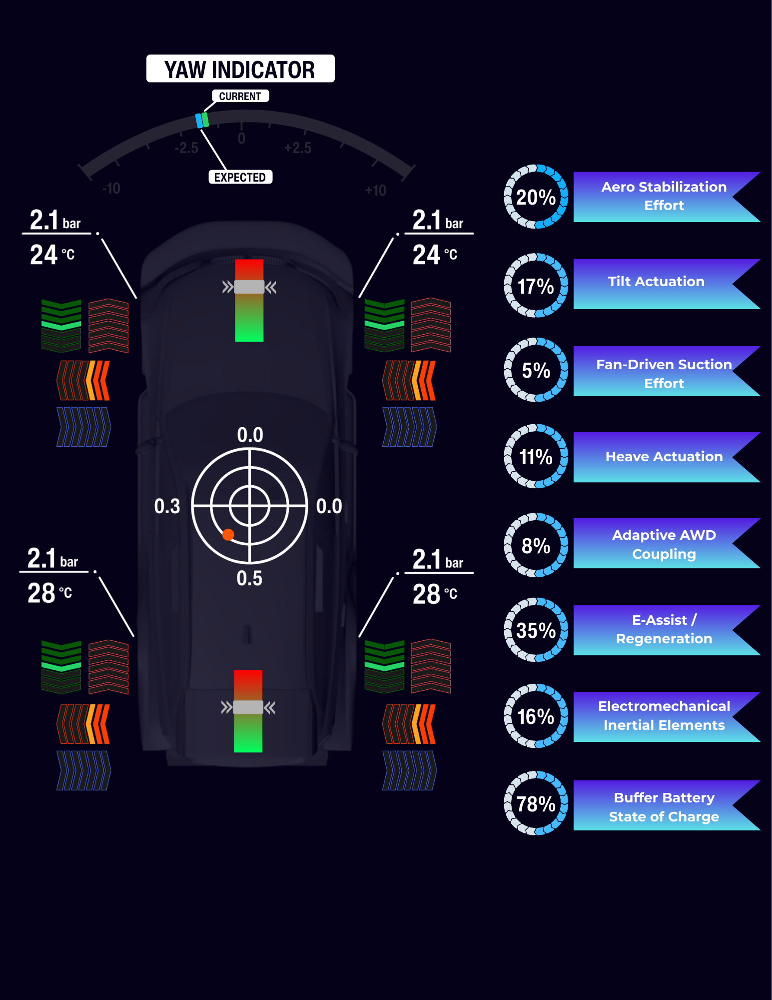

THE WAGNER VALKYRIES PROJECT
A fan-augmented ground-effect supercar program developed as an IP and performance demonstrator for next-generation downforce, active chassis control, and adaptive aerodynamic systems.
Two prototype platforms—Brynhildr and Sigrún—serve as engineering showcases, brand halos, and ultralow-volume demonstrator vehicles. Select investors may optionally participate as arm’s-length vehicle customers through separate commercial transactions.
The program is designed so that the driver, the vehicle, and the engineering team share a common understanding of what the car is experiencing—where it is loaded, how forces are being carried, and how the system responds at the limit. Performance is not only achieved, but felt, interpreted, and refined through a unified language of forces.
The vehicles are authored as complete systems, where performance emerges from the orchestration of forces rather than from isolated components.
“Valkyries exists to validate controllable, speed-independent downforce and force-aware vehicle control in real-world conditions—not simulations.”

A compact-bodied platform with upright packaging and an expanded ride-height envelope, enabling aggressive experimentation in underbody aerodynamics, fan duct routing, and suction plenum control.
Optimized as a high-observability grip demonstrator, Brynhildr emphasizes extreme downforce, traction-limited launches, and short-format exhibitions where system behavior, load paths, and control responses are intentionally legible, instrumented, and repeatable.
A lower-roofline touring-derived platform optimized for high-speed stability, sustained operation, and Nordschleife-relevant validation, prioritizing thermal robustness, aero consistency, and long-duration controllability.
Sigrún focuses on aerodynamic balance, inertial management, and force continuity across extended operating windows—serving as the program’s primary endurance and real-venue validation asset.

- Transient smoothing
- Regen capture
- Electrical stability
- Electric fan motors (suction)
- Hybrid assist & regenerative braking
- Tilt actuation
- Heave actuation
- Electromechanical inertial elements
- Vehicle control electronics
Sensing Inputs
- Plenum ΔP
- Ride height
- IMU
- Load-path instrumentation
- Actuator feedback (pressure / load)
Control Logic
Aero + chassis + force distribution control
Fan motors / tilt / heave / inertial elements
- Q1 2026 — Capital formation, supplier engagement, detailed engineering, and long-lead component procurement
- Q3 2026 – Q3 2027 — Prototype fabrication, integration, instrumentation, and validation testing
- Q3 2027 — Public reveal and exhibition launch Preferred venue: America On Wheels Museum (Allentown, PA) Optional timing alignment: SEMA 2027
- 2027–2028 — Demonstrations, events, record attempts, and licensing discussions